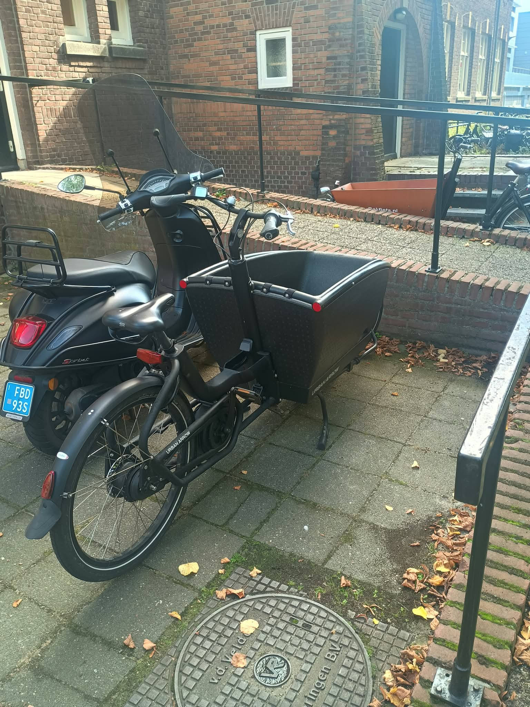
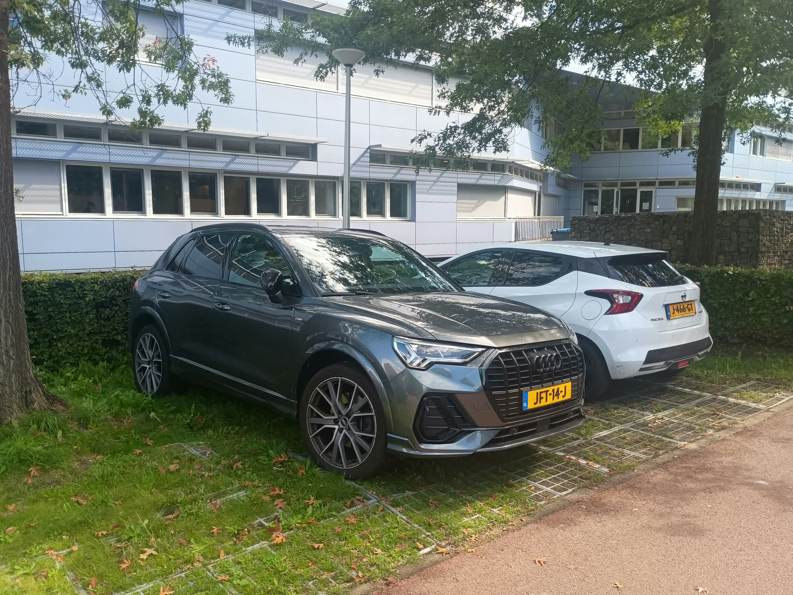
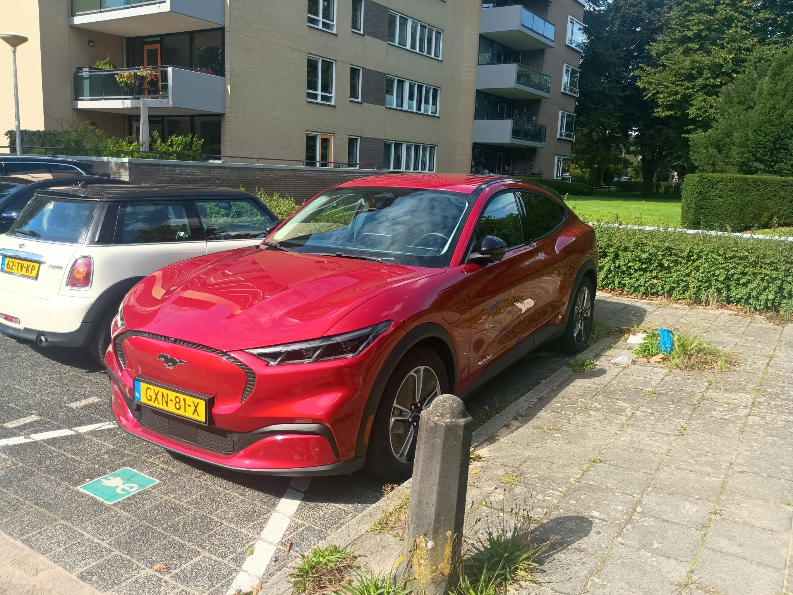
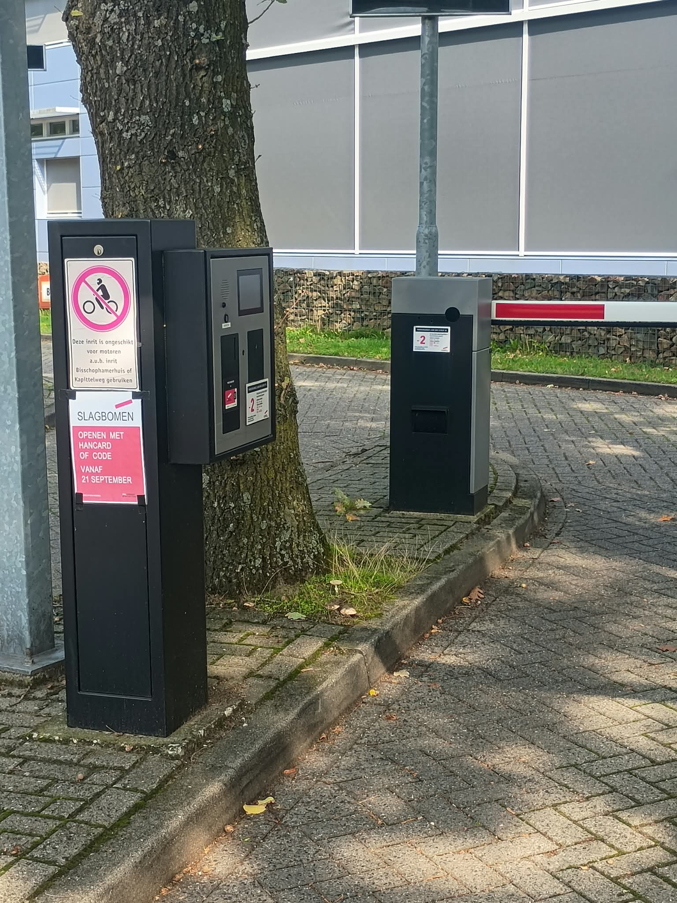

Signalen
zes vensters: Tegenlicht, FutureFit, de Hunt en mijn eigen radar"De eerste stap van een trend is niet begrijpen. Het is zien."
Dit hoofdstuk is L1: signaleren. Niet oordelen, niet verkopen — gewoon kijken, luisteren, ruiken, lezen. Ik heb een paar vensters opengezet: een documentaire, een klas vol woorden, een oude reiziger, een wandeling met camera, een dagelijkse scan. Alles wat ik zag, heb ik neergezet vóórdat ik er iets van dacht.
Venster 1 — Tegenlicht: Game of drones
Venster 1 — Tegenlicht: Game of drones
Waarom deze aflevering? De tech achter oorlog — omdat ik het kan zien gebeuren.
- De aflevering legde dezelfde tech uit vanuit verschillende kanten: vanaf een soldaat, vanaf de techsector, vanaf politiek en vanaf startups.
- Wat mij verwonderde: deze sector kan veel automatisering niet aan vanwege regels — en dat is cool zo.
↳ schrift - Ik heb geleerd dat er ook kleine startups in deze sector zitten — inzicht: kleine techbedrijven met een goed idee zijn populair.
- Het was uitzoemen, omdat ik vaak focus op de tech en niet op het plaatje.
Venster 2 — Eva's wereld (FutureFit)
Eva (trendwatcher) bracht haar wereld binnen: "Ruimtemakers voor hoofd, hart en handen" — een slimme, schone, sociale wereld:
- Spacemakers: geo-engineering, space factories, dark factories, wonen op water, cloud-economie, AI, health-tech, cybernetics
- Schoonmakers: climate, food, de Salatomaat (automatische salade / mini-kas)
↳ schrift, biobased bouwen, solar democracy, CO2 zuigen, micro-fabriek - Gelijkmakers: onderwijs & gelijkheid, elite health, aandachtseconomie, moreel kompas
En haar lijst met maatschappelijke (mega)trends die ik overnam: opwarming · hittestress · indoorgeneratie · rijken vermogen verdubbeld · angstgeneratie · eenzaamheid · woningtekort · dementie · tekorteconomie · slaaptekort · grondstoftekort · trust · systeemmoe
Uit de klasbrainstorm (Planet / People / Prof) kwamen thema's die bleven hangen: controle door rijken · big tech die misbruik maakt · eenzaamheid (parasociale relaties, ouderen op datingsites, relaties met robots) · gemak & efficiëntie overal — woorden als AI war, tech power, new money, robot love, digital id, greenwashing, AI eats doctor, cobot, hubot, cloud worker, robot supermarkt, smart living. [?]
Uit de klas, in m'n eigen woorden: "gemak is fijn en belangrijk — doe maar makkelijk."
Venster 3 — Boris (oud-reiziger)
"Bedrijven zijn angstig om grote AI-bedrijven permanent te vertrouwen."
Die zin is meteen blijven hangen. Want dat is precies de plek waar ik later wil bouwen (hoofdstuk 5). Maar hier is het nog gewoon een signaal: het vertrouwen in de grote platforms wankelt.
Venster 4 — Floris & Isa (oud-reizigers)
Floris & Isa deelden hun eigen reis toen we onze stoepwatch presenteerden. [? — ik heb hun verhaal niet opgeschreven: wil je er een zin over in de site?]
Venster 5 — Hunt, stoepwatch & scan
De Hunt (30 min rondlopen, foto's van opvallende zaken, daarna "out of the box" denken) en de stoepwatch (bewust observeren: signalen én wat erachter schuilt) leverden deze lijst op:
Mijn bril als eerste — wat mij opvalt is niet het onderwerp, maar de techniek erachter: dingen die techniek combineren met een ander probleem. Niet de suikerspin zelf, maar dat een machine hem maakt; niet de Salatomaat als gerecht, maar dat een kas een bord oplost. Dat is wat mij als ESE-student aanvalt.
Wat ik zag (uit m'n notebook, scan en les — ik verzint er niets bij):
- automaten & machines: suikerspin-machines · blikautomaten · snackmuren · 3D-printer op de markt · op-afstand-bestuurde grasmaaier van de gemeente · kleine electrische cellen/borden
- AI overal: AI-gegenereerde posters & "kunst" voor bedrijven · electrische reclameborden · "iedereen wil een site en denkt dat het met Claude kan" · "dat kan ik thuis ook"
- ouderen & eenzaamheid: ouderen die alleen eten · toegankelijke fietsen & driewielers voor ouderen · dure lunchtent in de natuur waar geen jongeren zitten · eenzaamheid
- kind & aandacht: kleurloze kinderspeelhoek (zonder kinderen) · gemaskerd gokken met "rare" producten (labubu, squishies) — gefocust op kinderen
- consumptie & afval: plastic rietjes (mensen willen geen vieze papieren rietjes) · zonnepaneel-schoonmaakborstels · verloren pakketjes kopen per gewicht
- gedrag: oortjes in tijdens gesprekken · asociaal fatbike-rijden (mensen natspuiten) · een enkeling die een mondkapje draagt
- data & toekomst: data = nieuw goed / nieuwe olie · zorgvelden die gehackt worden · CRISPR-baby · angst voor de toekomst · "waarom wordt mijn klant blij?"
- overig: popup stores · "vreemde" fashion / fashion als statement · pakketjes door het winkelcentrum · stoomster
[?]
Wat erachter schuilt (mijn eerste gedachtes, nog geen conclusies): toegankelijk & makkelijk · geen werknemer nodig, goedkoop · laagdrempelig voor een marktondernemer · eenzaamheid · erbij willen horen / bij een groep · gemak én ongemakkelijke toegankelijkheid · makkelijk kinderen meenemen · categoriseren naar soort bezoeker · goedkoop én relatief mooi · veel marge · gemak en luiheid · angst · op maat gemaakte spullen
Mijn foto's
(artifacts uit de hunt/stoepwatch — hunter-pics/)
| foto | wat ik er zag |
|---|---|
| electrische-bakfietsen | bakfietsen worden populairder: makkelijk meerdere kinderen naar school + boodschappen |
| grote-suv-autos | ik ben gewend aan kleine auto's — een oude Volvo 240 was toen "groot", nu is dat gemiddeld-klein in vergelijking |
| nostalgie-voor-automodellen | bedrijven brengen modellen terug (o.a. e-Mustang — dat model zelf vind ik niet leuk) |
| slimme-parkeerplaats-kentekenherkenning | slimme apparatuur wordt standaard: kentekenherkenning in parkeergarages |
Mijn scanplan
- Elke dag: nu.nl voorpagina + één interessant artikel uitdiepen
- ma: podcast over ondernemen · di: aflevering Tegenlicht · wo: Tegenlicht of artikel over een onbekend onderwerp · do: trendplatform (Tweakers) · vr: trend/entertainment/tech
Uit de maandag-podcast, de disposable software:
- software-bedrijven schrijven kleine tools waar je in 30 seconden iets mee kunt doen — een deel van software die wordt verkocht
- in een weekend software bouwen, 1% omzet van 50.000 klanten, volgende weekend iets nieuws
- freeware/shareware · converter-tools en calculators · mini-reclame apps voor politieke partijen · virale apps (screen time battle)
- verwachting: de lat gaat omhoog, omdat het aanbod groter wordt
- en het mooiste voor mij: tools die mensen helpen — denk aan leraren met veel administratie




Venster 6 — mijn eigen radar
(dingen die ik zelf op de radar had, los van de klas)
- Platform switch: "let op: Playstore en telefoons — nu AI. Slaat op agentic commerce."
- Waarom wilde OpenAI Medal kopen? Mijn gok: trainingsdata → real-world keuzes → AI getraind voor automatisering
- memoires: data over hoe mensen AI gebruiken en wat ze op willen slaan — dat wil ik uitbrengen
- 14 okt: Ondernemersmarkt Nijmegen — daar ben ik
(Een grappig concept dat ik tegenkwam, maar dat níet op m'n radar staat: een club waar telefoons worden ingenomen. Leuk idee, maar niet waar ik op bouw.)
Wat dit hoofdstuk toont (L1)
Ik heb meerdere zintuigen en vensters gebruikt: documentaire, klas, oud-reizigers, wandeling met camera, dagelijkse scan, eigen radar. En de belangrijkste regel hanteer ik: signaal eerst, interpretatie later — wat ik zag, staat naast wat erachter schuilt, niet erin gemengd.
Een lijst met signalen is nog geen trend. Dat komt in hoofdstuk 3: ordenen.